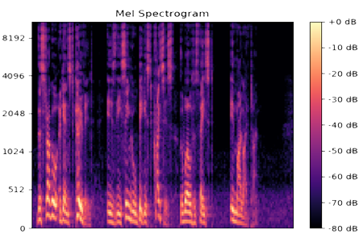
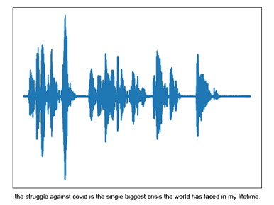
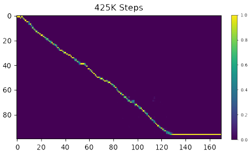
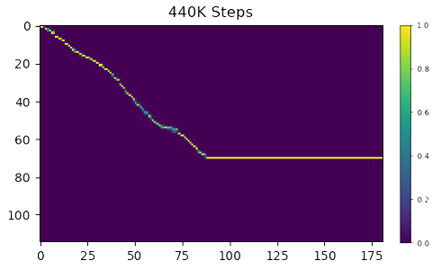

I began this project as a result of playing around with Markov chains. I developed a program that read in the last ten coronavirus briefing transcripts from the prime minister, and printed out a body of text of comparable length, where each word that followed the previous was selected based on the probability of its relative occurrence in the corpus I was modelling it on. This approach was naive, and while some of the results were quite humorous and did resemble the briefings somewhat, the text produced was grammatically incoherent. This got me wondering whether it would be possible to produce a text-to-speech system that could accurately re-create his voice, and read back the newly generated briefing.
I discovered code and resources online describing a way of training a deep convolutional text-to-speech model, first
outlined in a paper written in 2018. This so-called DCTTS model consists of two parts, a Text2Mel model which maps a
sequence of text to what is known as a Mel spectrogram, learnt using a convolutional network with guided attention. For
reference, a Mel spectrogram is a spectrogram of audio frequencies, transformed to what is known as the Mel scale, where
more of an emphasis is given to lower frequencies. The other model, a spectrogram super resolution network, upsamples
the coarse Mel spectrogram to a more granular representation of the data, learnt by means of another convolutional
neural network.

The original implementation, written in TensorFlow, was trained on the LJSpeech dataset. This dataset consisted of
around 13,000 spoken sentences with their corresponding labels. I knew from the start it wasn't realistic to have access
to, or create, a dataset of that size and quality for Boris Johnson's voice. A video made on the subject pointed out you
could perform transfer learning on this exact model with quite good results in a reasonable amount of time. Luckily the
Coronavirus briefings were all recorded and posted to YouTube, where I downloaded the audio, and split by silence in
Audacity. I then went through the transcriptions I had previously used, and manually split each label by a newline in
each text file, leaving me with around 500-600 labelled audio recordings of Boris Johnson's voice. I then wrote a simple
Python script to produce a metadata CSV in the same format as the LJSpeech metadata file, which would make integration
with the existing code as simple as possible.
"The struggle against covid is the single biggest crisis the world has faced in my lifetime." 22nd September 2020
I tried using the original implementation, written with TensorFlow, but as the code was over a year old and TensorFlow
is consistently being updated, there were parts of the code that were deprecated and would take too long to fix. I
looked for a PyTorch implementation, and found one which was pretty much the same as the original just written using a
different framework. The code itself did have a few bugs and required a bit of work to get it up and running, as well as
needing some adjustments for my specific use case. It is important to note that at this point, that my PC is running a
GTX 1050 with only 2GB of VRAM and 640 CUDA cores. I had the choice between training the model from scratch with the
limited data I had, which would take over 100 hours and I expected the results to not be that impressive, or try to
perform transfer learning on a pre-trained model. It just so happened that along with the code provided on GitHub, the
PyTorch implementation provided pre-trained LJSpeech models for both the Text2Mel and SSRN networks, trained to 410,000
and 190,000 steps respectively. Unsurprisingly, I took advantage of using these models to learn from.
Once the models were trained I pondered what I could use them on to both best demonstrate their performance, while at
the same time respecting the ethical considerations that naturally come in to question when working on anything of this
nature. As it happens, a new Coronavirus briefing was released on the 12th of October, which I had not used as part of
the training data. I decided to use this new transcript as the corpus I was going to synthesise to test my results. It
was similar enough to the training data to produce relevant results, but included many phrases that the model had not
seen before. It also had the added benefit that every word synthesised had already been spoken by Boris Johnson himself.
Each sentence in the transcript was synthesised separately and manually stitched together using Audacity, I then applied
some rudimental enhancements, such as boosting both the high and low frequencies, applying a compressor and normalizing.
After all that, the briefing was ready.
As I outlined in the previous section, I began the transfer from a model that was trained to 410,000 steps on the
Text2Mel and 190,000 steps on the SSRN, using the LJSpeech dataset. After which, the goal was to train for around
10,000-15,000 steps on the Text2Mel and around 5,000 steps on the SSRN. The models were saved every 1,000 steps due to
the hardware limitations I was working with. I used a batch size of 16 for training the Text2Mel and a batch size of 5
for the SSRN. After training just the Text2Mel for 15,000 steps, the results were notably similar to Boris Johnson's
vocal profile. But once the SSRN was trained, you could hear a significant difference. In the example I have provided
you can hear two signature features of his voice; the pauses he leaves between certain words and his dynamic range.
"I spent some time learning to speak properly, and this is the result." Text2Mel: 15k SSRN: 0
"This is what I sound like after the super resolution network has been trained for 5,000 steps." Text2Mel: 15k SSRN: 5k
After finishing training and getting pretty good results, I decided to carry on training for another 15,000 and 5,000
steps respectively, to see if there was any improvement. There was no improvement in training the Text2Mel any further,
in fact, the results actually seemed to sound slightly worse than before, backed up by the attention graphs produced.
The SSRN trained for 5,000 steps was slightly clearer to my ear, but no significant improvement.
